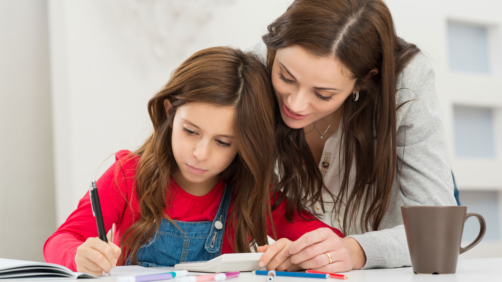

PASAR MAS TIEMPO CON LOS NIÑOS
Pasar tiempo en familia, ayuda a que los niños, que todavía están aprendiendo y desarrollándose, crezcan siendo individuos con una mayor estabilidad emocional; asimismo que aprendan a valorar las cosas que no se pueden comprar con dinero. Además, durante esos momentos que compartimos en familia, los unos podemos aprender de los otros y ayudamos a que nuestros hijos desarrollen habilidades sociales.

ESTAR PENDIENTE DE LAS TAREAS ESCOLARES
Ayudar a su hijo con los deberes y tareas escolares no debería implicar tenerse que pasar largas horas encorvado sobre su escritorio. Los padres pueden apoyar a sus hijos demostrándoles sus habilidades de organización y de estudio, explicándoles un problema complicado o animándoles a que se tomen un descanso cuando lleven cierto tiempo trabajando en las tareas escolares. Y, ¿quién sabe? ¡Es posible que los padres aprendan alguna que otra cosa en el proceso

CONVERSAR EN FAMILIA DURANTE LAS COMIDAS
Los niños que comen con la familia han mejorado sus vocabularios y destrezas de lectura. El tiempo que comparten juntos en la mesa les da la oportunidad de tener conversaciones importantes. Es el momento de contar historias y compartir experiencias y también de aprender destrezas sociales tales como el comportamiento en la mesa y el saber tomar turnos